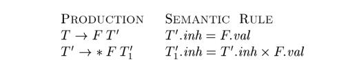

5.2 Evaluation Orders for SDD's#
Dependency graphs" are a useful tool for determining an evaluation order for the attribute instances in a given parse tree. While an annotated parse tree shows the values of attributes, a dependency graph helps us determine how those values can be computed.
In this section, in addition to dependency graphs, we define two important classes of SDD's: the "S-attributed" and the more general "L-attributed" SDD's. The translations specified by these two classes fit well with the parsing methods we have studied, and most translations encountered in practice can be written to conform to the requirements of at least one of these classes.
5.2.1 Dependency Graphs#
A dependency graph depicts the flow of information among the attribute instances in a particular parse tree; an edge from one attribute instance to another means that the value of the first is needed to compute the second. Edges express constraints implied by the semantic rules. In more detail:
-
For each parse-tree node, say a node labeled by grammar symbol
X, the dependency graph has a node for each attribute associated withX. -
Suppose that a semantic rule associated with a production
pdefines the value of synthesized attributeA.bin terms of the value ofX.c(the rule may defineA.bin terms of other attributes in addition toX.c). Then, the dependency graph has an edge fromX.ctoA.b. More precisely, at every nodeNlabeledAwhere productionpis applied, create an edge to attributebatN, from the attributecat the child ofNcorresponding to this instance of the symbolXin the body of the production.
Since a node
Ncan have several children labeledX, we again assume that subscripts distinguish among uses of the same symbol at different places in the production.
- Suppose that a semantic rule associated with a production
pdefines the value of inherited attributeB.cin terms of the value ofX.a. Then, the dependency graph has an edge fromX.atoB.c. For each nodeNlabeledBthat corresponds to an occurrence of thisBin the body of productionp, create an edge to attributecatNfrom the attributeaat the nodeMthat corresponds to this occurrence ofX. Note thatMcould be either the parent or a sibling ofN.
NOTE: What is described above is an algorithm for constructing a dependency graph.
5.2.2 Ordering the Evaluation of Attributes#
The dependency graph characterizes the possible orders in which we can evaluate the attributes at the various nodes of a parse tree. If the dependency graph has an edge from node M to node N , then the attribute corresponding to M must be evaluated before the attribute of N . Thus, the only allowable orders
of evaluation are those sequences of nodes $N_1, N_2,\dots , N_k$ such that if there is an edge of the dependency graph from $N_i$ to $N_j$, then i < j . Such an ordering embeds a directed graph into a linear order, and is called a topological sort of the graph.
If there is any cycle in the graph, then there are no topological sorts; that is, there is no way to evaluate the SDD on this parse tree. If there are no cycles, however, then there is always at least one topological sort. To see why, since there are no cycles, we can surely find a node with no edge entering. For if there were no such node, we could proceed from predecessor to predecessor until we came back to some node we had already seen, yielding a cycle. Make this node the first in the topological order, remove it from the dependency graph, and repeat the process on the remaining nodes.
5.2.3 S-Attributed Definitions#
As mentioned earlier, given an SDD, it is very hard to tell whether there exist any parse trees whose dependency graphs have cycles. In practice, translations can be implemented using classes of SDD's that guarantee an evaluation order, since they do not permit dependency graphs with cycles. Moreover, the two classes introduced in this section can be implemented efficiently in connection with top-down or bottom-up parsing.
The first class is defined as follows:
- An SDD is S-attributed if every attribute is synthesized.
When an SDD is S-attributed, we can evaluate its attributes in any bottom-up order of the nodes of the parse tree. It is often especially simple to evaluate the attributes by performing a postorder traversal of the parse tree and evaluating the attributes at a node N when the traversal leaves N for the last time. That is, we apply the function postorder, defined below, to the root of the parse tree (see also the box "Preorder and Postorder Traversals" in Section 2.3.4):

S-attributed definitions can be implemented during bottom-up parsing, since a bottom-up parse corresponds to a postorder traversal. Specifically, postorder corresponds exactly to the order in which an LR parser reduces a production body to its head. This fact will b e used in Section 5.4.2 to evaluate synthesized attributes and store them on the stack during LR parsing, without creating the tree nodes explicitly.
5.2.4 L-Attributed Definitions#
The second class of SDD's is called L-attributed definitions. The idea behind this class is that, between the attributes associated with a production body, dependency-graph edges can go from left to right, but not from right to left (hence "L-attributed"). More precisely, each attribute must be either
- Synthesized, or
- Inherited, but with the rules limited as follows. Suppose that there is a production $A \to X_1, X_2, \dots, X_n$, and that there is an inherited attribute $X_i.a$ computed by a rule associated with this production. Then the rule may use only:
- Inherited attributes associated with the head
A. - Either inherited or synthesized attributes associated with the occurrences of symbols $X_1, X_2, \dots, X_{i-1}$ located to the left of $X_i$.
- Inherited or synthesized attributes associated with this occurrence of $X_i$ itself, but only in such a way that there are no cycles in a dependency graph formed by the attributes of this $X_i$.
Example 5.8 : The SDD in Fig. 5.4 is L-attributed. To see why, consider the semantic rules for inherited attributes, which are repeated here for convenience:

The first of these rules defines the inherited attribute T'.inh using only F.val , and F appears to the left of T' in the production body, as required. The second rule defines $T_1'.inh$ using the inherited attribute T'inh associated with the head, and F.val , where F appears to the left of $T_1'$ in the production body.
In each of these cases, the rules use information "from above or from the left," as required by the class. The remaining attributes are synthesized. Hence, the SDD is L-attributed.
Example 5.9 : Any SDD containing the following production and rules cannot be L-attributed:

The second rule defines an inherited attribute B.i, so the entire SDD cannot be S-attributed. Further, although the rule is legal, the SDD cannot be L-attributed, because the attribute C.c is used to help define B.i, and C is to the right of B in the production body.
5.2.5 Semantic Rules with Controlled Side Effects#
In practice, translations involve side effects: a desk calculator might print a result; a code generator might enter the type of an identifier into a symbol table. With SDD's, we strike a balance between attribute grammars and translation schemes. Attribute grammars have no side effects and allow any evaluation order consistent with the dependency graph. Translation schemes impose left-to-right evaluation and allow semantic actions to contain any program fragment; translation schemes are discussed in Section 5.4.
We shall control side effcts in SDD's in one of the following ways:
- Permit incidental side effects that do not constrain attribute evaluation. In other words, permit side effects when attribute evaluation based on any topological sort of the dependency graph produces a "correct" translation, where "correct" depends on the application.
- Constrain the allowable evaluation orders, so that the same translation is produced for any allowable order. The constraints can be thought of as implicit edges added to the dependency graph.